Bar Charts
Simple Bar Chart
using VegaLite, DataFrames
data = DataFrame(
a=["A","B","C","D","E","F","G","H","I"],
b=[28,55,43,91,81,53,19,87,52]
)
data |> @vlplot(:bar, x="a:o", y=:b)"><g class="mark-group role-frame root" role="graphics-object" aria-roledescription="group mark container"><g transform="translate(0,0)"><path class="background" aria-hidden="true" d="M0.5,0.5h180v200h-180Z" stroke="%23ddd"/><g><g class="mark-group role-axis" aria-hidden="true"><g transform="translate(0.5,0.5)"><path class="background" aria-hidden="true" d="M0,0h0v0h0Z" pointer-events="none"/><g><g class="mark-rule role-axis-grid" pointer-events="none"><line transform="translate(0,200)" x2="180" y2="0" stroke="%23ddd" stroke-width="1" opacity="1"/><line transform="translate(0,160)" x2="180" y2="0" stroke="%23ddd" stroke-width="1" opacity="1"/><line transform="translate(0,120)" x2="180" y2="0" stroke="%23ddd" stroke-width="1" opacity="1"/><line transform="translate(0,80)" x2="180" y2="0" stroke="%23ddd" stroke-width="1" opacity="1"/><line transform="translate(0,40)" x2="180" y2="0" stroke="%23ddd" stroke-width="1" opacity="1"/><line transform="translate(0,0)" x2="180" y2="0" stroke="%23ddd" stroke-width="1" opacity="1"/></g></g><path class="foreground" aria-hidden="true" d="" pointer-events="none" display="none"/></g></g><g class="mark-group role-axis" role="graphics-symbol" aria-roledescription="axis" aria-label="X-axis titled %27a%27 for a discrete scale with 9 values: A, B, C, D, E, ending with I"><g transform="translate(0.5,200.5)"><path class="background" aria-hidden="true" d="M0,0h0v0h0Z" pointer-events="none"/><g><g class="mark-rule role-axis-tick" pointer-events="none"><line transform="translate(10,0)" x2="0" y2="5" stroke="%23888" stroke-width="1" opacity="1"/><line transform="translate(30,0)" x2="0" y2="5" stroke="%23888" stroke-width="1" opacity="1"/><line transform="translate(50,0)" x2="0" y2="5" stroke="%23888" stroke-width="1" opacity="1"/><line transform="translate(70,0)" x2="0" y2="5" stroke="%23888" stroke-width="1" opacity="1"/><line transform="translate(90,0)" x2="0" y2="5" stroke="%23888" stroke-width="1" opacity="1"/><line transform="translate(110,0)" x2="0" y2="5" stroke="%23888" stroke-width="1" opacity="1"/><line transform="translate(130,0)" x2="0" y2="5" stroke="%23888" stroke-width="1" opacity="1"/><line transform="translate(150,0)" x2="0" y2="5" stroke="%23888" stroke-width="1" opacity="1"/><line transform="translate(170,0)" x2="0" y2="5" stroke="%23888" stroke-width="1" opacity="1"/></g><g class="mark-text role-axis-label" pointer-events="none"><text text-anchor="end" transform="translate(9.5,7) rotate(270) translate(0,3)" font-family="sans-serif" font-size="10px" fill="%23000" opacity="1">A</text><text text-anchor="end" transform="translate(29.5,7) rotate(270) translate(0,3)" font-family="sans-serif" font-size="10px" fill="%23000" opacity="1">B</text><text text-anchor="end" transform="translate(49.5,7) rotate(270) translate(0,3)" font-family="sans-serif" font-size="10px" fill="%23000" opacity="1">C</text><text text-anchor="end" transform="translate(69.5,7) rotate(270) translate(0,3)" font-family="sans-serif" font-size="10px" fill="%23000" opacity="1">D</text><text text-anchor="end" transform="translate(89.5,7) rotate(270) translate(0,3)" font-family="sans-serif" font-size="10px" fill="%23000" opacity="1">E</text><text text-anchor="end" transform="translate(109.5,7) rotate(270) translate(0,3)" font-family="sans-serif" font-size="10px" fill="%23000" opacity="1">F</text><text text-anchor="end" transform="translate(129.5,7) rotate(270) translate(0,3)" font-family="sans-serif" font-size="10px" fill="%23000" opacity="1">G</text><text text-anchor="end" transform="translate(149.5,7) rotate(270) translate(0,3)" font-family="sans-serif" font-size="10px" fill="%23000" opacity="1">H</text><text text-anchor="end" transform="translate(169.5,7) rotate(270) translate(0,3)" font-family="sans-serif" font-size="10px" fill="%23000" opacity="1">I</text></g><g class="mark-rule role-axis-domain" pointer-events="none"><line transform="translate(0,0)" x2="180" y2="0" stroke="%23888" stroke-width="1" opacity="1"/></g><g class="mark-text role-axis-title" pointer-events="none"><text text-anchor="middle" transform="translate(90,27.7490234375)" font-family="sans-serif" font-size="11px" font-weight="bold" fill="%23000" opacity="1">a</text></g></g><path class="foreground" aria-hidden="true" d="" pointer-events="none" display="none"/></g></g><g class="mark-group role-axis" role="graphics-symbol" aria-roledescription="axis" aria-label="Y-axis titled %27b%27 for a linear scale with values from 0 to 100"><g transform="translate(0.5,0.5)"><path class="background" aria-hidden="true" d="M0,0h0v0h0Z" pointer-events="none"/><g><g class="mark-rule role-axis-tick" pointer-events="none"><line transform="translate(0,200)" x2="-5" y2="0" stroke="%23888" stroke-width="1" opacity="1"/><line transform="translate(0,160)" x2="-5" y2="0" stroke="%23888" stroke-width="1" opacity="1"/><line transform="translate(0,120)" x2="-5" y2="0" stroke="%23888" stroke-width="1" opacity="1"/><line transform="translate(0,80)" x2="-5" y2="0" stroke="%23888" stroke-width="1" opacity="1"/><line transform="translate(0,40)" x2="-5" y2="0" stroke="%23888" stroke-width="1" opacity="1"/><line transform="translate(0,0)" x2="-5" y2="0" stroke="%23888" stroke-width="1" opacity="1"/></g><g class="mark-text role-axis-label" pointer-events="none"><text text-anchor="end" transform="translate(-7,203)" font-family="sans-serif" font-size="10px" fill="%23000" opacity="1">0</text><text text-anchor="end" transform="translate(-7,163)" font-family="sans-serif" font-size="10px" fill="%23000" opacity="1">20</text><text text-anchor="end" transform="translate(-7,123)" font-family="sans-serif" font-size="10px" fill="%23000" opacity="1">40</text><text text-anchor="end" transform="translate(-7,83)" font-family="sans-serif" font-size="10px" fill="%23000" opacity="1">60</text><text text-anchor="end" transform="translate(-7,42.99999999999999)" font-family="sans-serif" font-size="10px" fill="%23000" opacity="1">80</text><text text-anchor="end" transform="translate(-7,3)" font-family="sans-serif" font-size="10px" fill="%23000" opacity="1">100</text></g><g class="mark-rule role-axis-domain" pointer-events="none"><line transform="translate(0,200)" x2="0" y2="-200" stroke="%23888" stroke-width="1" opacity="1"/></g><g class="mark-text role-axis-title" pointer-events="none"><text text-anchor="middle" transform="translate(-30.0869140625,100) rotate(-90) translate(0,-2)" font-family="sans-serif" font-size="11px" font-weight="bold" fill="%23000" opacity="1">b</text></g></g><path class="foreground" aria-hidden="true" d="" pointer-events="none" display="none"/></g></g><g class="mark-rect role-mark marks" role="graphics-object" aria-roledescription="rect mark container"><path aria-label="a: A; b: 28" role="graphics-symbol" aria-roledescription="bar" d="M1,144h18v56h-18Z" fill="%234c78a8"/><path aria-label="a: B; b: 55" role="graphics-symbol" aria-roledescription="bar" d="M21,89.99999999999999h18v110.00000000000001h-18Z" fill="%234c78a8"/><path aria-label="a: C; b: 43" role="graphics-symbol" aria-roledescription="bar" d="M41,114.00000000000001h18v85.99999999999999h-18Z" fill="%234c78a8"/><path aria-label="a: D; b: 91" role="graphics-symbol" aria-roledescription="bar" d="M61,17.999999999999993h18v182h-18Z" fill="%234c78a8"/><path aria-label="a: E; b: 81" role="graphics-symbol" aria-roledescription="bar" d="M81,37.999999999999986h18v162h-18Z" fill="%234c78a8"/><path aria-label="a: F; b: 53" role="graphics-symbol" aria-roledescription="bar" d="M101,94h18v106h-18Z" fill="%234c78a8"/><path aria-label="a: G; b: 19" role="graphics-symbol" aria-roledescription="bar" d="M121,162h18v38h-18Z" fill="%234c78a8"/><path aria-label="a: H; b: 87" role="graphics-symbol" aria-roledescription="bar" d="M141,26h18v174h-18Z" fill="%234c78a8"/><path aria-label="a: I; b: 52" role="graphics-symbol" aria-roledescription="bar" d="M161,96h18v104h-18Z" fill="%234c78a8"/></g></g><path class="foreground" aria-hidden="true" d="" display="none"/></g></g></g></svg>)
Responsive Bar Chart
using VegaLite, VegaDatasets
dataset("cars") |>
@vlplot(
height=250,
width="container",
:bar,
x="Origin:n",
y="count()",
)"><g class="mark-group role-frame root" role="graphics-object" aria-roledescription="group mark container"><g transform="translate(0,0)"><path class="background" aria-hidden="true" d="M0.5,0.5h148v250h-148Z" stroke="%23ddd"/><g><g class="mark-group role-axis" aria-hidden="true"><g transform="translate(0.5,0.5)"><path class="background" aria-hidden="true" d="M0,0h0v0h0Z" pointer-events="none"/><g><g class="mark-rule role-axis-grid" pointer-events="none"><line transform="translate(0,250)" x2="148" y2="0" stroke="%23ddd" stroke-width="1" opacity="1"/><line transform="translate(0,202)" x2="148" y2="0" stroke="%23ddd" stroke-width="1" opacity="1"/><line transform="translate(0,154)" x2="148" y2="0" stroke="%23ddd" stroke-width="1" opacity="1"/><line transform="translate(0,106)" x2="148" y2="0" stroke="%23ddd" stroke-width="1" opacity="1"/><line transform="translate(0,58)" x2="148" y2="0" stroke="%23ddd" stroke-width="1" opacity="1"/><line transform="translate(0,10)" x2="148" y2="0" stroke="%23ddd" stroke-width="1" opacity="1"/></g></g><path class="foreground" aria-hidden="true" d="" pointer-events="none" display="none"/></g></g><g class="mark-group role-axis" role="graphics-symbol" aria-roledescription="axis" aria-label="X-axis titled %27Origin%27 for a discrete scale with 3 values: Europe, Japan, USA"><g transform="translate(0.5,250.5)"><path class="background" aria-hidden="true" d="M0,0h0v0h0Z" pointer-events="none"/><g><g class="mark-rule role-axis-tick" pointer-events="none"><line transform="translate(24,0)" x2="0" y2="5" stroke="%23888" stroke-width="1" opacity="1"/><line transform="translate(74,0)" x2="0" y2="5" stroke="%23888" stroke-width="1" opacity="1"/><line transform="translate(123,0)" x2="0" y2="5" stroke="%23888" stroke-width="1" opacity="1"/></g><g class="mark-text role-axis-label" pointer-events="none"><text text-anchor="end" transform="translate(24.16666666666667,7) rotate(270) translate(0,3)" font-family="sans-serif" font-size="10px" fill="%23000" opacity="1">Europe</text><text text-anchor="end" transform="translate(73.5,7) rotate(270) translate(0,3)" font-family="sans-serif" font-size="10px" fill="%23000" opacity="1">Japan</text><text text-anchor="end" transform="translate(122.83333333333334,7) rotate(270) translate(0,3)" font-family="sans-serif" font-size="10px" fill="%23000" opacity="1">USA</text></g><g class="mark-rule role-axis-domain" pointer-events="none"><line transform="translate(0,0)" x2="148" y2="0" stroke="%23888" stroke-width="1" opacity="1"/></g><g class="mark-text role-axis-title" pointer-events="none"><text text-anchor="middle" transform="translate(74,55.166015625)" font-family="sans-serif" font-size="11px" font-weight="bold" fill="%23000" opacity="1">Origin</text></g></g><path class="foreground" aria-hidden="true" d="" pointer-events="none" display="none"/></g></g><g class="mark-group role-axis" role="graphics-symbol" aria-roledescription="axis" aria-label="Y-axis titled %27Count of Records%27 for a linear scale with values from 0 to 260"><g transform="translate(0.5,0.5)"><path class="background" aria-hidden="true" d="M0,0h0v0h0Z" pointer-events="none"/><g><g class="mark-rule role-axis-tick" pointer-events="none"><line transform="translate(0,250)" x2="-5" y2="0" stroke="%23888" stroke-width="1" opacity="1"/><line transform="translate(0,202)" x2="-5" y2="0" stroke="%23888" stroke-width="1" opacity="1"/><line transform="translate(0,154)" x2="-5" y2="0" stroke="%23888" stroke-width="1" opacity="1"/><line transform="translate(0,106)" x2="-5" y2="0" stroke="%23888" stroke-width="1" opacity="1"/><line transform="translate(0,58)" x2="-5" y2="0" stroke="%23888" stroke-width="1" opacity="1"/><line transform="translate(0,10)" x2="-5" y2="0" stroke="%23888" stroke-width="1" opacity="1"/></g><g class="mark-text role-axis-label" pointer-events="none"><text text-anchor="end" transform="translate(-7,253)" font-family="sans-serif" font-size="10px" fill="%23000" opacity="1">0</text><text text-anchor="end" transform="translate(-7,204.92307692307693)" font-family="sans-serif" font-size="10px" fill="%23000" opacity="1">50</text><text text-anchor="end" transform="translate(-7,156.84615384615387)" font-family="sans-serif" font-size="10px" fill="%23000" opacity="1">100</text><text text-anchor="end" transform="translate(-7,108.76923076923079)" font-family="sans-serif" font-size="10px" fill="%23000" opacity="1">150</text><text text-anchor="end" transform="translate(-7,60.69230769230768)" font-family="sans-serif" font-size="10px" fill="%23000" opacity="1">200</text><text text-anchor="end" transform="translate(-7,12.61538461538461)" font-family="sans-serif" font-size="10px" fill="%23000" opacity="1">250</text></g><g class="mark-rule role-axis-domain" pointer-events="none"><line transform="translate(0,250)" x2="0" y2="-250" stroke="%23888" stroke-width="1" opacity="1"/></g><g class="mark-text role-axis-title" pointer-events="none"><text text-anchor="middle" transform="translate(-30.0869140625,125) rotate(-90) translate(0,-2)" font-family="sans-serif" font-size="11px" font-weight="bold" fill="%23000" opacity="1">Count of Records</text></g></g><path class="foreground" aria-hidden="true" d="" pointer-events="none" display="none"/></g></g><g class="mark-rect role-mark marks" role="graphics-object" aria-roledescription="rect mark container"><path aria-label="Origin: USA; Count of Records: 254" role="graphics-symbol" aria-roledescription="bar" d="M101.13333333333334,5.769230769230776h44.400000000000006v244.23076923076923h-44.400000000000006Z" fill="%234c78a8"/><path aria-label="Origin: Europe; Count of Records: 73" role="graphics-symbol" aria-roledescription="bar" d="M2.4666666666666686,179.80769230769232h44.400000000000006v70.19230769230768h-44.400000000000006Z" fill="%234c78a8"/><path aria-label="Origin: Japan; Count of Records: 79" role="graphics-symbol" aria-roledescription="bar" d="M51.800000000000004,174.03846153846152h44.400000000000006v75.96153846153848h-44.400000000000006Z" fill="%234c78a8"/></g></g><path class="foreground" aria-hidden="true" d="" display="none"/></g></g></g></svg>)
Aggregate Bar Chart
using VegaLite, VegaDatasets
dataset("population") |>
@vlplot(
height={step=17},
:bar,
transform=[{filter="datum.year == 2000"}],
y="age:o",
x={"sum(people)", axis={title="population"}}
)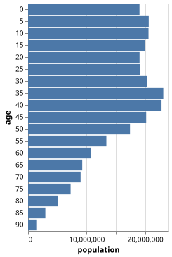
Aggregate Bar Chart (Sorted)
using VegaLite, VegaDatasets
dataset("population") |>
@vlplot(
:bar,
transform=[{filter="datum.year == 2000"}],
y={"age:o",sort="-x"},
x={"sum(people)", axis={title="population"}}
)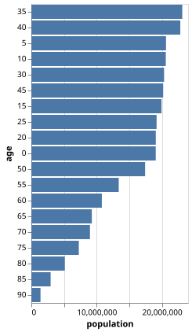
Grouped Bar Chart
using VegaLite, VegaDatasets
dataset("population") |>
@vlplot(
:bar,
transform=[
{filter="datum.year == 2000"},
{calculate="datum.sex == 2 ? 'Female' : 'Male'", as="gender"}
],
column="age:o",
y={"sum(people)", axis={title="population", grid=false}},
x={"gender:n", axis={title=""}},
color={"gender:n", scale={range=["#675193", "#ca8861"]}},
spacing=10,
config={
view={stroke=:transparent},
axis={domainWidth=1}
}
)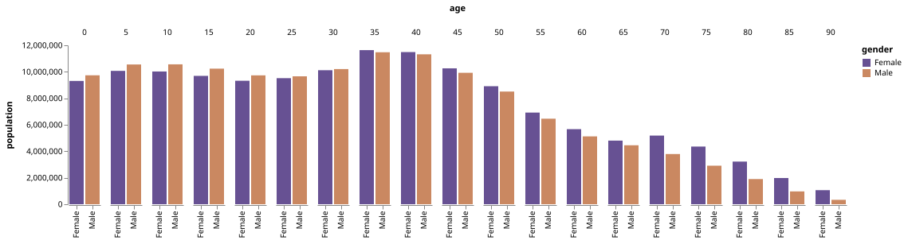
Grouped Bar Chart (Another Example)
using VegaLite, VegaDatasets
dataset("seattle-weather") |>
@vlplot(
:bar,
column="month(date):o",
x={"weather:n", axis={title="", labels=false}},
y={"count()", axis={title="Count", grid=false}},
color={
:weather,
scale={
domain=["sun","fog","drizzle","rain","snow"],
range=["#e7ba52","#c7c7c7","#aec7e8","#1f77b4","#9467bd"]
},
legend={
title="Weather type"
}
},
spacing=10,
config={
view={stroke=:transparent},
axis={domainWidth=1}
}
)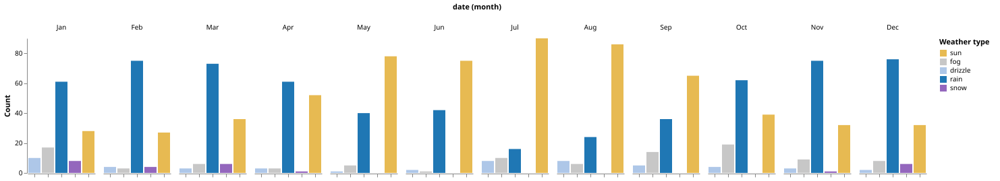
Stacked Bar Chart
This is exactly the same chart as the previous example, except it is stacked instead of grouped.
using VegaLite, VegaDatasets
dataset("seattle-weather") |>
@vlplot(
:bar,
x={"month(date):o", axis={title="Month of the year"}},
y="count()",
color={
:weather,
scale={
domain=["sun","fog","drizzle","rain","snow"],
range=["#e7ba52","#c7c7c7","#aec7e8","#1f77b4","#9467bd"]
},
legend={
title="Weather type"
}
}
)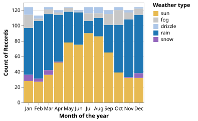
Stacked Bar Chart with Rounded Corners
using VegaLite, VegaDatasets
dataset("seattle-weather") |>
@vlplot(
mark={
:bar,
cornerRadiusTopLeft=3,
cornerRadiusTopRight=3
},
x={"month(date):o"},
y="count()",
color={
:weather
}
)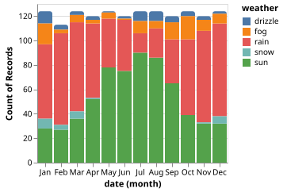
Horizontal Stacked Bar Chart
using VegaLite, VegaDatasets
dataset("barley") |>
@vlplot(:bar, x="sum(yield)", y=:variety, color=:site)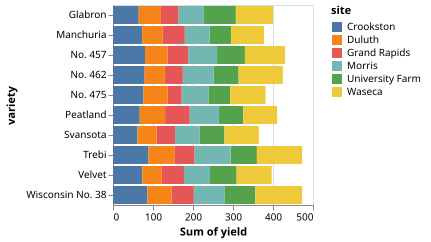
Normalized (Percentage) Stacked Bar Chart
using VegaLite, VegaDatasets
dataset("population") |>
@vlplot(
:bar,
transform=[
{filter="datum.year == 2000"},
{calculate="datum.sex==2 ? 'Female' : 'Male'",as="gender"}
],
y={
"sum(people)",
axis={title="population"},
stack=:normalize
},
x="age:o",
color={
"gender:n",
scale={range=["#675193", "#ca8861"]}
},
width={step=17}
)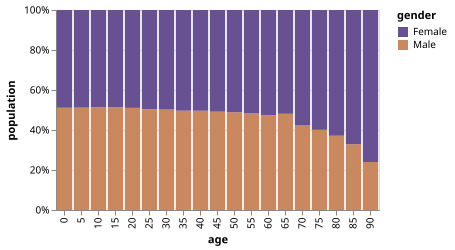
Gantt Chart (Ranged Bar Marks)
using VegaLite
@vlplot(
:bar,
data={
values=[
{task="A",start=1,stop=3},
{task="B",start=3,stop=8},
{task="C",start=8,stop=10}
]
},
y="task:o",
x="start:q",
x2="stop:q"
)"><g class="mark-group role-frame root" role="graphics-object" aria-roledescription="group mark container"><g transform="translate(0,0)"><path class="background" aria-hidden="true" d="M0.5,0.5h200v60h-200Z" stroke="%23ddd"/><g><g class="mark-group role-axis" aria-hidden="true"><g transform="translate(0.5,60.5)"><path class="background" aria-hidden="true" d="M0,0h0v0h0Z" pointer-events="none"/><g><g class="mark-rule role-axis-grid" pointer-events="none"><line transform="translate(0,0)" x2="0" y2="-60" stroke="%23ddd" stroke-width="1" opacity="1"/><line transform="translate(40,0)" x2="0" y2="-60" stroke="%23ddd" stroke-width="1" opacity="1"/><line transform="translate(80,0)" x2="0" y2="-60" stroke="%23ddd" stroke-width="1" opacity="1"/><line transform="translate(120,0)" x2="0" y2="-60" stroke="%23ddd" stroke-width="1" opacity="1"/><line transform="translate(160,0)" x2="0" y2="-60" stroke="%23ddd" stroke-width="1" opacity="1"/><line transform="translate(200,0)" x2="0" y2="-60" stroke="%23ddd" stroke-width="1" opacity="1"/></g></g><path class="foreground" aria-hidden="true" d="" pointer-events="none" display="none"/></g></g><g class="mark-group role-axis" role="graphics-symbol" aria-roledescription="axis" aria-label="X-axis titled %27start, stop%27 for a linear scale with values from 0 to 10"><g transform="translate(0.5,60.5)"><path class="background" aria-hidden="true" d="M0,0h0v0h0Z" pointer-events="none"/><g><g class="mark-rule role-axis-tick" pointer-events="none"><line transform="translate(0,0)" x2="0" y2="5" stroke="%23888" stroke-width="1" opacity="1"/><line transform="translate(40,0)" x2="0" y2="5" stroke="%23888" stroke-width="1" opacity="1"/><line transform="translate(80,0)" x2="0" y2="5" stroke="%23888" stroke-width="1" opacity="1"/><line transform="translate(120,0)" x2="0" y2="5" stroke="%23888" stroke-width="1" opacity="1"/><line transform="translate(160,0)" x2="0" y2="5" stroke="%23888" stroke-width="1" opacity="1"/><line transform="translate(200,0)" x2="0" y2="5" stroke="%23888" stroke-width="1" opacity="1"/></g><g class="mark-text role-axis-label" pointer-events="none"><text text-anchor="start" transform="translate(0,15)" font-family="sans-serif" font-size="10px" fill="%23000" opacity="1">0</text><text text-anchor="middle" transform="translate(40,15)" font-family="sans-serif" font-size="10px" fill="%23000" opacity="1">2</text><text text-anchor="middle" transform="translate(80,15)" font-family="sans-serif" font-size="10px" fill="%23000" opacity="1">4</text><text text-anchor="middle" transform="translate(120,15)" font-family="sans-serif" font-size="10px" fill="%23000" opacity="1">6</text><text text-anchor="middle" transform="translate(160,15)" font-family="sans-serif" font-size="10px" fill="%23000" opacity="1">8</text><text text-anchor="end" transform="translate(200,15)" font-family="sans-serif" font-size="10px" fill="%23000" opacity="1">10</text></g><g class="mark-rule role-axis-domain" pointer-events="none"><line transform="translate(0,0)" x2="200" y2="0" stroke="%23888" stroke-width="1" opacity="1"/></g><g class="mark-text role-axis-title" pointer-events="none"><text text-anchor="middle" transform="translate(100,30)" font-family="sans-serif" font-size="11px" font-weight="bold" fill="%23000" opacity="1">start, stop</text></g></g><path class="foreground" aria-hidden="true" d="" pointer-events="none" display="none"/></g></g><g class="mark-group role-axis" role="graphics-symbol" aria-roledescription="axis" aria-label="Y-axis titled %27task%27 for a discrete scale with 3 values: A, B, C"><g transform="translate(0.5,0.5)"><path class="background" aria-hidden="true" d="M0,0h0v0h0Z" pointer-events="none"/><g><g class="mark-rule role-axis-tick" pointer-events="none"><line transform="translate(0,10)" x2="-5" y2="0" stroke="%23888" stroke-width="1" opacity="1"/><line transform="translate(0,30)" x2="-5" y2="0" stroke="%23888" stroke-width="1" opacity="1"/><line transform="translate(0,50)" x2="-5" y2="0" stroke="%23888" stroke-width="1" opacity="1"/></g><g class="mark-text role-axis-label" pointer-events="none"><text text-anchor="end" transform="translate(-7,12.5)" font-family="sans-serif" font-size="10px" fill="%23000" opacity="1">A</text><text text-anchor="end" transform="translate(-7,32.5)" font-family="sans-serif" font-size="10px" fill="%23000" opacity="1">B</text><text text-anchor="end" transform="translate(-7,52.5)" font-family="sans-serif" font-size="10px" fill="%23000" opacity="1">C</text></g><g class="mark-rule role-axis-domain" pointer-events="none"><line transform="translate(0,0)" x2="0" y2="60" stroke="%23888" stroke-width="1" opacity="1"/></g><g class="mark-text role-axis-title" pointer-events="none"><text text-anchor="middle" transform="translate(-17.982421875,30) rotate(-90) translate(0,-2)" font-family="sans-serif" font-size="11px" font-weight="bold" fill="%23000" opacity="1">task</text></g></g><path class="foreground" aria-hidden="true" d="" pointer-events="none" display="none"/></g></g><g class="mark-rect role-mark marks" role="graphics-object" aria-roledescription="rect mark container"><path aria-label="start: 1; task: A; stop: 3" role="graphics-symbol" aria-roledescription="bar" d="M20,1h40v18h-40Z" fill="%234c78a8"/><path aria-label="start: 3; task: B; stop: 8" role="graphics-symbol" aria-roledescription="bar" d="M60,21h100v18h-100Z" fill="%234c78a8"/><path aria-label="start: 8; task: C; stop: 10" role="graphics-symbol" aria-roledescription="bar" d="M160,41h40v18h-40Z" fill="%234c78a8"/></g></g><path class="foreground" aria-hidden="true" d="" display="none"/></g></g></g></svg>)
A bar chart encoding color names in the data
using VegaLite
@vlplot(
:bar,
data={
values=[
{color="red",b=28},
{color="green",b=55},
{color="blue",b=43}
]
},
x="color:n",
y="b:q",
color={"color:n",scale=nothing}
)"><g class="mark-group role-frame root" role="graphics-object" aria-roledescription="group mark container"><g transform="translate(0,0)"><path class="background" aria-hidden="true" d="M0.5,0.5h60v200h-60Z" stroke="%23ddd"/><g><g class="mark-group role-axis" aria-hidden="true"><g transform="translate(0.5,0.5)"><path class="background" aria-hidden="true" d="M0,0h0v0h0Z" pointer-events="none"/><g><g class="mark-rule role-axis-grid" pointer-events="none"><line transform="translate(0,200)" x2="60" y2="0" stroke="%23ddd" stroke-width="1" opacity="1"/><line transform="translate(0,164)" x2="60" y2="0" stroke="%23ddd" stroke-width="1" opacity="1"/><line transform="translate(0,127)" x2="60" y2="0" stroke="%23ddd" stroke-width="1" opacity="1"/><line transform="translate(0,91)" x2="60" y2="0" stroke="%23ddd" stroke-width="1" opacity="1"/><line transform="translate(0,55)" x2="60" y2="0" stroke="%23ddd" stroke-width="1" opacity="1"/><line transform="translate(0,18)" x2="60" y2="0" stroke="%23ddd" stroke-width="1" opacity="1"/></g></g><path class="foreground" aria-hidden="true" d="" pointer-events="none" display="none"/></g></g><g class="mark-group role-axis" role="graphics-symbol" aria-roledescription="axis" aria-label="X-axis titled %27color%27 for a discrete scale with 3 values: blue, green, red"><g transform="translate(0.5,200.5)"><path class="background" aria-hidden="true" d="M0,0h0v0h0Z" pointer-events="none"/><g><g class="mark-rule role-axis-tick" pointer-events="none"><line transform="translate(10,0)" x2="0" y2="5" stroke="%23888" stroke-width="1" opacity="1"/><line transform="translate(30,0)" x2="0" y2="5" stroke="%23888" stroke-width="1" opacity="1"/><line transform="translate(50,0)" x2="0" y2="5" stroke="%23888" stroke-width="1" opacity="1"/></g><g class="mark-text role-axis-label" pointer-events="none"><text text-anchor="end" transform="translate(9.5,7) rotate(270) translate(0,3)" font-family="sans-serif" font-size="10px" fill="%23000" opacity="1">blue</text><text text-anchor="end" transform="translate(29.5,7) rotate(270) translate(0,3)" font-family="sans-serif" font-size="10px" fill="%23000" opacity="1">green</text><text text-anchor="end" transform="translate(49.5,7) rotate(270) translate(0,3)" font-family="sans-serif" font-size="10px" fill="%23000" opacity="1">red</text></g><g class="mark-rule role-axis-domain" pointer-events="none"><line transform="translate(0,0)" x2="60" y2="0" stroke="%23888" stroke-width="1" opacity="1"/></g><g class="mark-text role-axis-title" pointer-events="none"><text text-anchor="middle" transform="translate(30,48.8818359375)" font-family="sans-serif" font-size="11px" font-weight="bold" fill="%23000" opacity="1">color</text></g></g><path class="foreground" aria-hidden="true" d="" pointer-events="none" display="none"/></g></g><g class="mark-group role-axis" role="graphics-symbol" aria-roledescription="axis" aria-label="Y-axis titled %27b%27 for a linear scale with values from 0 to 55"><g transform="translate(0.5,0.5)"><path class="background" aria-hidden="true" d="M0,0h0v0h0Z" pointer-events="none"/><g><g class="mark-rule role-axis-tick" pointer-events="none"><line transform="translate(0,200)" x2="-5" y2="0" stroke="%23888" stroke-width="1" opacity="1"/><line transform="translate(0,164)" x2="-5" y2="0" stroke="%23888" stroke-width="1" opacity="1"/><line transform="translate(0,127)" x2="-5" y2="0" stroke="%23888" stroke-width="1" opacity="1"/><line transform="translate(0,91)" x2="-5" y2="0" stroke="%23888" stroke-width="1" opacity="1"/><line transform="translate(0,55)" x2="-5" y2="0" stroke="%23888" stroke-width="1" opacity="1"/><line transform="translate(0,18)" x2="-5" y2="0" stroke="%23888" stroke-width="1" opacity="1"/></g><g class="mark-text role-axis-label" pointer-events="none"><text text-anchor="end" transform="translate(-7,203)" font-family="sans-serif" font-size="10px" fill="%23000" opacity="1">0</text><text text-anchor="end" transform="translate(-7,166.63636363636363)" font-family="sans-serif" font-size="10px" fill="%23000" opacity="1">10</text><text text-anchor="end" transform="translate(-7,130.27272727272725)" font-family="sans-serif" font-size="10px" fill="%23000" opacity="1">20</text><text text-anchor="end" transform="translate(-7,93.90909090909092)" font-family="sans-serif" font-size="10px" fill="%23000" opacity="1">30</text><text text-anchor="end" transform="translate(-7,57.54545454545454)" font-family="sans-serif" font-size="10px" fill="%23000" opacity="1">40</text><text text-anchor="end" transform="translate(-7,21.181818181818187)" font-family="sans-serif" font-size="10px" fill="%23000" opacity="1">50</text></g><g class="mark-rule role-axis-domain" pointer-events="none"><line transform="translate(0,200)" x2="0" y2="-200" stroke="%23888" stroke-width="1" opacity="1"/></g><g class="mark-text role-axis-title" pointer-events="none"><text text-anchor="middle" transform="translate(-23.724609375,100) rotate(-90) translate(0,-2)" font-family="sans-serif" font-size="11px" font-weight="bold" fill="%23000" opacity="1">b</text></g></g><path class="foreground" aria-hidden="true" d="" pointer-events="none" display="none"/></g></g><g class="mark-rect role-mark marks" role="graphics-object" aria-roledescription="rect mark container"><path aria-label="color: red; b: 28" role="graphics-symbol" aria-roledescription="bar" d="M41,98.18181818181819h18v101.81818181818181h-18Z" fill="red"/><path aria-label="color: green; b: 55" role="graphics-symbol" aria-roledescription="bar" d="M21,0h18v200h-18Z" fill="green"/><path aria-label="color: blue; b: 43" role="graphics-symbol" aria-roledescription="bar" d="M1,43.636363636363626h18v156.36363636363637h-18Z" fill="blue"/></g></g><path class="foreground" aria-hidden="true" d="" display="none"/></g></g></g></svg>)
Layered Bar Chart
using VegaLite, VegaDatasets
dataset("population") |>
@vlplot(
:bar,
transform=[
{filter="datum.year==2000"},
{calculate="datum.sex==2 ? 'Female' : 'Male'",as="gender"}
],
x="age:o",
y={"sum(people)", axis={title="population"}, stack=nothing},
color={"gender:n", scale={range=["#675193", "#ca8861"]}},
opacity={value=0.7},
width={step=17}
)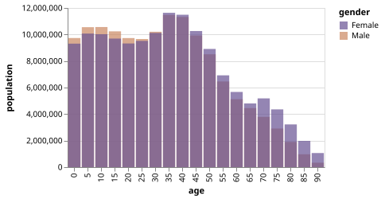
Diverging Stacked Bar Chart (Population Pyramid)
using VegaLite, VegaDatasets
dataset("population") |>
@vlplot(
width=300,
height=200,
:bar,
transform=[
{filter="datum.year==2000"},
{calculate="datum.sex==2 ? 'Female' : 'Male'", as="gender"},
{calculate="datum.sex==2 ? -datum.people : datum.people", "as"="signed_people" }
],
x={"sum(signed_people)", axis={title="population", format=:s} },
y={"age:o", axis=nothing, sort="descending" },
color={"gender:n", scale={range=["#675193", "#ca8861"]},legend={orient=:top,title=nothing}},
config={view={stroke=nothing},axis={grid=false}}
)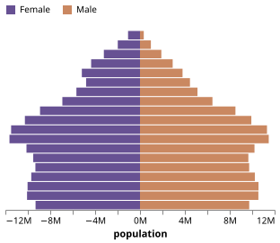
Diverging Stacked Bar Chart (with Neutral Parts)
using VegaLite, DataFrames
data = DataFrame(
question=["Question $(div(i,5)+1)" for i in 0:39],
type=repeat(["Strongly disagree", "Disagree", "Neither agree nor disagree",
"Agree", "Strongly agree"],outer=8),
value=[24, 294, 594, 1927, 376, 2, 2, 0, 7, 11, 2, 0, 2, 4, 2, 0, 2, 1, 7,
6, 0, 1, 3, 16, 4, 1, 1, 2, 9, 3, 0, 0, 1, 4, 0, 0, 0, 0, 0, 2],
percentage=[0.7, 9.1, 18.5, 59.9, 11.7, 18.2, 18.2, 0, 63.6, 0, 20, 0, 20,
40, 20, 0, 12.5, 6.3, 43.8, 37.5, 0, 4.2, 12.5, 66.7, 16.7, 6.3, 6.3,
12.5, 56.3, 18.8, 0, 0, 20, 80, 0, 0, 0, 0, 0, 100],
percentage_start=[-19.1, -18.4, -9.2, 9.2, 69.2, -36.4, -18.2, 0, 0, 63.6,
-30, -10, -10, 10, 50, -15.6, -15.6, -3.1, 3.1, 46.9, -10.4, -10.4,
-6.3, 6.3, 72.9, -18.8, -12.5, -6.3, 6.3, 62.5, -10, -10, -10, 10, 90,
0, 0, 0, 0, 0],
percentage_end=[-18.4, -9.2, 9.2, 69.2, 80.9, -18.2, 0, 0, 63.6, 63.6, -10,
-10, 10, 50, 70, -15.6, -3.1, 3.1, 46.9, 84.4, -10.4, -6.3, 6.3, 72.9,
89.6, -12.5, -6.3, 6.3, 62.5, 81.3, -10, -10, 10, 90, 90, 0, 0, 0, 0, 100]
)
data |> @vlplot(
:bar,
x={:percentage_start, axis={title="Percentage"}},
x2=:percentage_end,
y={
:question, axis={
title="Question",
offset=5,
ticks=false,
minExtent=60,
domain=false
}
},
color={
:type,
legend={title="Response"},
scale={
domain=[
"Strongly disagree",
"Disagree",
"Neither agree nor disagree",
"Agree",
"Strongly agree"
],
range=["#c30d24", "#f3a583", "#cccccc", "#94c6da", "#1770ab"],
type=:ordinal
}
}
)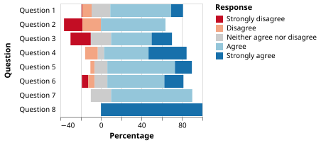
Bar Chart with Labels
using VegaLite
@vlplot(
data={
values=[
{a="A",b=28},
{a="B",b=55},
{a="C",b=43}
]
},
y="a:o",
x="b:q"
) +
@vlplot(:bar) +
@vlplot(
mark={
:text,
align=:left,
baseline=:middle,
dx=3
},
text="b:q"
)"><g class="mark-group role-frame root" role="graphics-object" aria-roledescription="group mark container"><g transform="translate(0,0)"><path class="background" aria-hidden="true" d="M0.5,0.5h200v60h-200Z" stroke="%23ddd"/><g><g class="mark-group role-axis" aria-hidden="true"><g transform="translate(0.5,60.5)"><path class="background" aria-hidden="true" d="M0,0h0v0h0Z" pointer-events="none"/><g><g class="mark-rule role-axis-grid" pointer-events="none"><line transform="translate(0,0)" x2="0" y2="-60" stroke="%23ddd" stroke-width="1" opacity="1"/><line transform="translate(36,0)" x2="0" y2="-60" stroke="%23ddd" stroke-width="1" opacity="1"/><line transform="translate(73,0)" x2="0" y2="-60" stroke="%23ddd" stroke-width="1" opacity="1"/><line transform="translate(109,0)" x2="0" y2="-60" stroke="%23ddd" stroke-width="1" opacity="1"/><line transform="translate(145,0)" x2="0" y2="-60" stroke="%23ddd" stroke-width="1" opacity="1"/><line transform="translate(182,0)" x2="0" y2="-60" stroke="%23ddd" stroke-width="1" opacity="1"/></g></g><path class="foreground" aria-hidden="true" d="" pointer-events="none" display="none"/></g></g><g class="mark-group role-axis" role="graphics-symbol" aria-roledescription="axis" aria-label="X-axis titled %27b%27 for a linear scale with values from 0 to 55"><g transform="translate(0.5,60.5)"><path class="background" aria-hidden="true" d="M0,0h0v0h0Z" pointer-events="none"/><g><g class="mark-rule role-axis-tick" pointer-events="none"><line transform="translate(0,0)" x2="0" y2="5" stroke="%23888" stroke-width="1" opacity="1"/><line transform="translate(36,0)" x2="0" y2="5" stroke="%23888" stroke-width="1" opacity="1"/><line transform="translate(73,0)" x2="0" y2="5" stroke="%23888" stroke-width="1" opacity="1"/><line transform="translate(109,0)" x2="0" y2="5" stroke="%23888" stroke-width="1" opacity="1"/><line transform="translate(145,0)" x2="0" y2="5" stroke="%23888" stroke-width="1" opacity="1"/><line transform="translate(182,0)" x2="0" y2="5" stroke="%23888" stroke-width="1" opacity="1"/></g><g class="mark-text role-axis-label" pointer-events="none"><text text-anchor="start" transform="translate(0,15)" font-family="sans-serif" font-size="10px" fill="%23000" opacity="1">0</text><text text-anchor="middle" transform="translate(36.36363636363637,15)" font-family="sans-serif" font-size="10px" fill="%23000" opacity="1">10</text><text text-anchor="middle" transform="translate(72.72727272727273,15)" font-family="sans-serif" font-size="10px" fill="%23000" opacity="1">20</text><text text-anchor="middle" transform="translate(109.09090909090908,15)" font-family="sans-serif" font-size="10px" fill="%23000" opacity="1">30</text><text text-anchor="middle" transform="translate(145.45454545454547,15)" font-family="sans-serif" font-size="10px" fill="%23000" opacity="1">40</text><text text-anchor="middle" transform="translate(181.8181818181818,15)" font-family="sans-serif" font-size="10px" fill="%23000" opacity="1">50</text></g><g class="mark-rule role-axis-domain" pointer-events="none"><line transform="translate(0,0)" x2="200" y2="0" stroke="%23888" stroke-width="1" opacity="1"/></g><g class="mark-text role-axis-title" pointer-events="none"><text text-anchor="middle" transform="translate(100,30)" font-family="sans-serif" font-size="11px" font-weight="bold" fill="%23000" opacity="1">b</text></g></g><path class="foreground" aria-hidden="true" d="" pointer-events="none" display="none"/></g></g><g class="mark-group role-axis" role="graphics-symbol" aria-roledescription="axis" aria-label="Y-axis titled %27a%27 for a discrete scale with 3 values: A, B, C"><g transform="translate(0.5,0.5)"><path class="background" aria-hidden="true" d="M0,0h0v0h0Z" pointer-events="none"/><g><g class="mark-rule role-axis-tick" pointer-events="none"><line transform="translate(0,10)" x2="-5" y2="0" stroke="%23888" stroke-width="1" opacity="1"/><line transform="translate(0,30)" x2="-5" y2="0" stroke="%23888" stroke-width="1" opacity="1"/><line transform="translate(0,50)" x2="-5" y2="0" stroke="%23888" stroke-width="1" opacity="1"/></g><g class="mark-text role-axis-label" pointer-events="none"><text text-anchor="end" transform="translate(-7,12.5)" font-family="sans-serif" font-size="10px" fill="%23000" opacity="1">A</text><text text-anchor="end" transform="translate(-7,32.5)" font-family="sans-serif" font-size="10px" fill="%23000" opacity="1">B</text><text text-anchor="end" transform="translate(-7,52.5)" font-family="sans-serif" font-size="10px" fill="%23000" opacity="1">C</text></g><g class="mark-rule role-axis-domain" pointer-events="none"><line transform="translate(0,0)" x2="0" y2="60" stroke="%23888" stroke-width="1" opacity="1"/></g><g class="mark-text role-axis-title" pointer-events="none"><text text-anchor="middle" transform="translate(-17.982421875,30) rotate(-90) translate(0,-2)" font-family="sans-serif" font-size="11px" font-weight="bold" fill="%23000" opacity="1">a</text></g></g><path class="foreground" aria-hidden="true" d="" pointer-events="none" display="none"/></g></g><g class="mark-rect role-mark layer_0_marks" role="graphics-object" aria-roledescription="rect mark container"><path aria-label="b: 28; a: A" role="graphics-symbol" aria-roledescription="bar" d="M0,1h101.81818181818181v18h-101.81818181818181Z" fill="%234c78a8"/><path aria-label="b: 55; a: B" role="graphics-symbol" aria-roledescription="bar" d="M0,21h200v18h-200Z" fill="%234c78a8"/><path aria-label="b: 43; a: C" role="graphics-symbol" aria-roledescription="bar" d="M0,41h156.36363636363637v18h-156.36363636363637Z" fill="%234c78a8"/></g><g class="mark-text role-mark layer_1_marks" role="graphics-object" aria-roledescription="text mark container"><text aria-label="b: 28; a: A" role="graphics-symbol" aria-roledescription="text mark" text-anchor="start" transform="translate(104.81818181818181,13)" font-family="sans-serif" font-size="11px" fill="black">28</text><text aria-label="b: 55; a: B" role="graphics-symbol" aria-roledescription="text mark" text-anchor="start" transform="translate(203,33)" font-family="sans-serif" font-size="11px" fill="black">55</text><text aria-label="b: 43; a: C" role="graphics-symbol" aria-roledescription="text mark" text-anchor="start" transform="translate(159.36363636363637,53)" font-family="sans-serif" font-size="11px" fill="black">43</text></g></g><path class="foreground" aria-hidden="true" d="" display="none"/></g></g></g></svg>)
Bar Chart with Label Overlays
using VegaLite, VegaDatasets
dataset("movies") |>
@vlplot(
width=200,
height={step=16},
y={:Major_Genre,axis=nothing}
) +
@vlplot(
mark={:bar,color="#ddd"},
x={"mean(IMDB_Rating)",axis={title="Mean IMDB Ratings"},scale={domain=[0,10]}},
) +
@vlplot(
mark={:text,align="left",x=5},
text="Major_Genre:n",
detail={aggregate="count",type="quantitative"}
)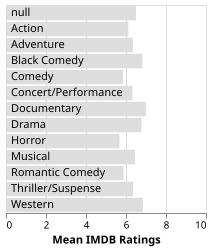
Bar Chart showing Initials of Month Names
using VegaLite, VegaDatasets
dataset("seattle-weather") |>
@vlplot(
:bar,
x={"date:t",timeUnit="month",axis={labelAlign="left",labelExpr="datum.label[0]"}},
y={"mean(precipitation)"}
)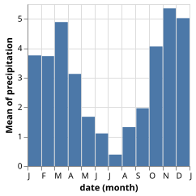